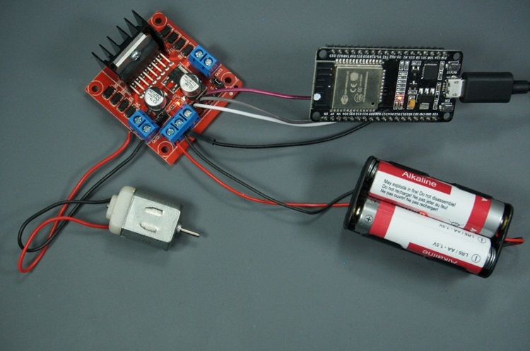
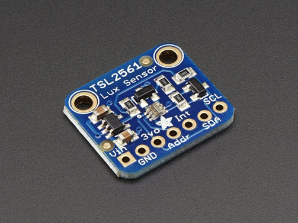

სათვალის საწმენდი მოწყობილობა!
ეს პროექტი ფოკუსირებულია ავტომატური სათვალეების დასუფთავების მოწყობილობის შექმნაზე,
რომელიც უზრუნველყოფს ეფექტურ და მოსახერხებელ გადაწყვეტას ლინზების სისუფთავის შესანარჩუნებლად.
ჩვენი მიზანია: ლინზების სისუფთავის დაცვა წყლისა და ქიმიკატების გარეშე!

გაიგე მეტი
პროექტის შესახებ
ამ პროექტი ეხება სათვალეების გასაწმენდ მოწყობილობის დიზაინსა და განვითარებას. მოწყობილობა არ იყენებს წყალს სათვალეების გასაწმენდად. განვითარების პროცესში გამოიყენება ESP32 მიკროკონტროლერი, სენსორები, მოტორები და ეკრანები, რათა უზრუნველყოს მოწყობილობის ფუნქციების პროგრამირება. ამ პროექტის მიზანია ყოველდღიურ ცხოვრებაში გამოყენებული სათვალეების სწრაფი და ეფექტური გაწმენდა წყლის გარეშე. მოწყობილობა უზრუნველყოფს მომხმარებლებს სათვალეების უსაფრთხო და სწრაფად გასაწმენდად, რაც ამცირებს მოვლის ხარჯებს და დროს.

ჩვენი მოწყობილობა უზრუნველყოფს მომხმარებლებს სათვალეების უსაფრთხო და სწრაფად გასაწმენდად, რაც ამცირებს მოვლის ხარჯებს და დროს. სათვალეებთან ჩემი პირველი გამოცდილებიდან მოყოლებული, დასუფთავება ყოველთვის მტკივნეული ეკალი იყო ჩემს თვალში. ბუნებრივია, რომ ეს პროცესი ავტომატური, მარტივი და ეფექტური გავხადე ჩემი მიზანი! რამდენიმე წლის შემდეგ, მე კვლავ მივყვები ამ ხედვას და მოუთმენლად ველი მის განხორციელებას ნებისმიერი ინდივიდისთვის. - დამფუძნებელი სირთულეებმა მაშინვე გამოავლინა თავი, მათ შორის როგორ უნდა გაიწმინდოს ეფექტურად, სათვალეების დაჭერა, ეფექტურობა, სხვადასხვა ტიპის სათვალეები, რომლებსაც მას შეუძლია... ყველაფერი. მაგრამ მოხარული ვარ გაცნობოთ, რომ ჩვენი საპატენტო დიზაინი მზად არის. და ჩვენ ვერ ვიტანთ მის გაცნობას სამყაროს და სამუდამოდ შეცვლას.

ჩვენი საპატენტო დიზაინი მოიცავს: უვნებელი სათვალეების ჩასმის დიზაინი; სწრაფი გამოშვების სისტემა (დაჭერის ღილაკის გათავისუფლების დიზაინი); სათვალეების ჭრილის ჩანართის დიზაინი; საწმენდი ბორბლების როტაციის დიზაინი... და ა.შ.
სერვისი
ავტომატური დასუფთავება: მოწყობილობა სრულად ავტომატიზებულია და წუთებში მოაცილებს ლინზებზე დაგროვებულ მტვერს, თითის ნაკვალევს და სხვა დაბინძურებებს. ეს უზრუნველყოფს ლინზების სრულყოფილ სისუფთავეს ყოველგვარი ზედმეტი ძალისხმევის გარეშე.
წყლისა და ქიმიკატების გარეშე: ჩვენ ვიყენებთ ეკოლოგიურად სუფთა ტექნოლოგიას, რაც არ საჭიროებს ქიმიური ნივთიერებების გამოყენებას. ეს ხელს უწყობს გარემოს დაცვას და ზრდის მოწყობილობის სიცოცხლისუნარიანობას.

პროექტის ძირითადი ტექნოლოგიებია:
- DC მოტორი (მექანიკური მოძრაობისთვის)
- L298N ძრავის კონტროლერი
- ESP32 მიკროკონტროლერი პროგრამირების და ინტელექტუალური ფუნქციებისთვის
- ენერგიის წყარო: AA ბატარეები
- კაბელები, რომლებიც აერთიანებენ სისტემის კომპონენტებს.
- ეკრანზე გამოსახული გრაფიკული ელემენტები. - დასუფთავების პროცესის დასაწყისი, გაჩერება ან დაპაუზება სენსორული ეკრანის მეშვეობით. - შეცდომის შეტყობინებები (მაგ., "დატენეთ ბატარეა").
გამოყენების სიმარტივე
- ინტუიციური მართვა: მომხმარებელს შეუძლია ერთდროულად აკონტროლოს სხვადასხვა ფუნქცია ეკრანის საშუალებით.
- მტვრის და ლინზების სიბნელის შემოწმება: სენსორი განსაზღვრავს, რამდენად ბინძურია სათვალე, თუ მას დაბალი სინათლის გაბნევა აქვს - თუ სენსორი განსაზღვრავს დაბალ განათებას, მოწყობილობა გააქტიურდება და დაიწყებს ლინზების გაწმენდას.
მონაწილეები
აქშინ თაგიევი
ქანან ალიევი
გასან ჩობანოვი
რამაზან აბდულაევი
- აქშინ თაგიევი - შეასრულებს Kotlin ის საშუალებით აპლიკაციის შექმნას.
- დისტანციურად მართვა
- ლოკალური ანდროიდ აპლიკაცია
- ქანან ალიევი - შეასრულებს მექანიკურ მხარეს
- ძრავების და სენსორების ინსტალაციას
- მათ სამუშაო მდგომარეობაში მოყვანას და მოწყობილობასთან ინტეგრირებას
- გასან ჩობანოვი - პასუხისმგებელია ენერგიის მართვა და კავშირზე ანუ
- ბატარეების/ელექტრო წყაროს სწორად განაწილება
- ეკრანის ფუნქციონირების უზრუნველყოფა
- ელექტრო სქემების დიაგრამების დახატვა.
- რამაზან აბდულაევი - შეასრულებს ESP32 - ზე მუშაობას, ანუ C++ ზე დაპროგრამება.
- მექანიკური მხარის მართვა